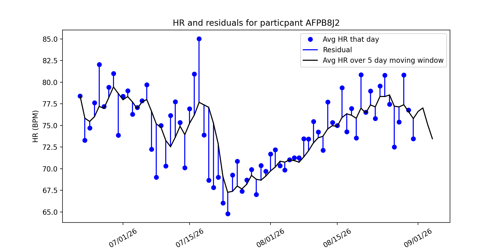

Evidation Project Update 2 - February 21st¶
Overview¶
Over the past few weeks our team has been investigating a dataset used in the “Pre-symptomatic detection of COVID-19 from smartwatch data” (Mishra et al) study. The dataset contains the heart rate, step count, and sleep data of 32 individuals diagnosed with COVID-19. Ultimately our goal is to discover methods of pre-symptomatic COVID-19 detection using this wearable data.
Data Updates¶
Data Resolutions¶
In this most recent update, we took the data, which was recorded every 1-second (we call it “1-second resolution”), and reduced it to the following resolutions, taking the median of the heart rate and steps over the time interval. The different resolutions represent how we aggregated the 1-second data into different time intervals (i.e. a 5 minute resolution represents us taking the 1 second data and taking the median over 5 minute intervals)
Resolution |
# of Observations |
|---|---|
1 second |
95,919,428 |
1 minute |
15,990,495 |
5 minute |
3,208,131 |
30 minute |
539,967 |
1 hour |
271,219 |
1 day |
11,784 |
As we can see, making the data less granular allowed us to greatly reduce the size of the data, making it easier for us to compute residuals. In computation of the residuals from the previous section, we decided to use the 1 hour residuals and 1 day residuals to make computations as fast as possible.
Future Work on data¶
Next goal with the data is to parse out dates from the symptoms which are in a string format using regular expressions and the datetime module in python. Until this point, we have not been able to work with some of the symptom data because of unusual formatting. As we try to determine more relationships between the data, this data will be important, especially when one-hot-encoded (0=healthy, 1=symptoms, 2= sick), we will be able to use the data with already existing classification methods on top of creating our own methods.
Residuals¶
One method of pre-symptomatic COVID-19 detection proposed in Mishra et al is to look at an individual’s heart rate (HR) or step count on a given day, and compare that value with some baseline (like their mean or median HR/step count). The difference between an individual’s HR or stepcount and their baseline is what we refer to as a residual. If an individual has anomalous (for example, abnormally high) residuals over a time interval, it could be a sign that they’ve contracted the coronavirus. So far we’ve explored two methods of computing the residuals: comparing HR with the average over all days, and comparing HR with the average over a sliding window.
Method 1: comparing HR with the average over all days¶
We began looking at heart rate and step residuals in the most basic sense we could. This gave us the ability to see any basic trends in the heart rate, steps, and COVID-19 diagnosis. To calculate the residuals for each patient, we used the following formulas:

Where  is the heart rate at time t and
is the heart rate at time t and  is participant i’s average heart rate over all days. A similar method was used to compute step residuals:
is participant i’s average heart rate over all days. A similar method was used to compute step residuals:

Below is a visualizations of participant AFPB8J2’s heart rate and residuals computed using this method. Each blue dot is the participant’s average HR that day, and the black line is their average HR over all days. The blue lines represent the residual value of heart rate described in the equations above:

Method 1 is naive because we are assuming that every patient has an overall average heart rate. This means we assume this average even when the patient is sitting, sleeping, exercising, etc.. This differs from Mishra et al., where the average heart rate for each patient was a moving average calculated on a 28 day time interval. Using this naive approach allows us to see if there are any basic trends and do comparisons to the methods used by Mishra et al., further giving us an understanding of choices they made in the creation of their detection algorithms.
Method 2: comparing HR with the average over a 5 day window¶
An alternative method is computing the average heart rate over a 5 day window.:

In this method, we took the 5 day moving average of a users heart rate and computed residuals from their data. This sliding window would compute the average over the previous 5 days, moving as the data went along.
This method’s strength is that it takes into account variability over a time frame, rather than assuming there is no variance in a patients resting heart rate. If someone began exercising, and their resting heart rate decreases as their cardiovascular health increases, then the moving average would take into account this change, whereas the baseline model would not.
Residuals and COVID-19 symptom onset/recovery¶
We were interested to see whether there are spikes/dips in HR residuals before and after a participant experiences COVID-19 symptoms. Below are the same plots from before, but with residuals colored in red if a participant experienced symptoms that day:
Avg over all days |
Avg over 5 day window |
|---|---|
|
|


Just inspecting the graph, we see there’s an initial spike in the residual, and then a significant drop. Our next steps are to investigate anomaly detection algorithms and see if they can pick up on these anomalous HRs and anticipate COVID-19 diagnosis.
Next Steps¶
For Spring Quarter, we plan to investigate further into the Anomaly Detection methods, RHR-Diff and HROS-AD, and running those on our residuals. Additionally, we will try to improve or even devise our own algorithms for detecting anomalies in the residual heart rate. Furthermore, we will explore cross-validated linear mixed models and causal modeling and inference.